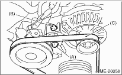
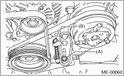

CAUTION:
Wipe off any oil and water on the belt and pulley.
1. Install the belt (C), and tighten the slider bolt so as to obtain the specified belt tension. 
2. Tighten the lock bolt (A).
3. Tighten the slider bolt (B).
Tightening torque:
Lock bolt
25 N·m (2.5 kgf-m, 18.1 ft-lb)
Slider bolt
8 N·m (0.8 kgf-m, 5.5 ft-lb)

1. Install a belt, and tighten the slider bolt (B) so as to obtain the specified belt tension.
2. Tighten the lock nut (A).
Tightening torque:
Lock nut (A)
22.6 N·m (2.3 kgf-m, 16.6 ft-lb)
